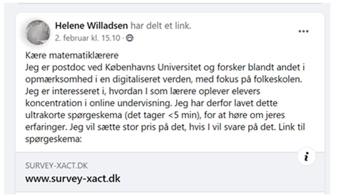
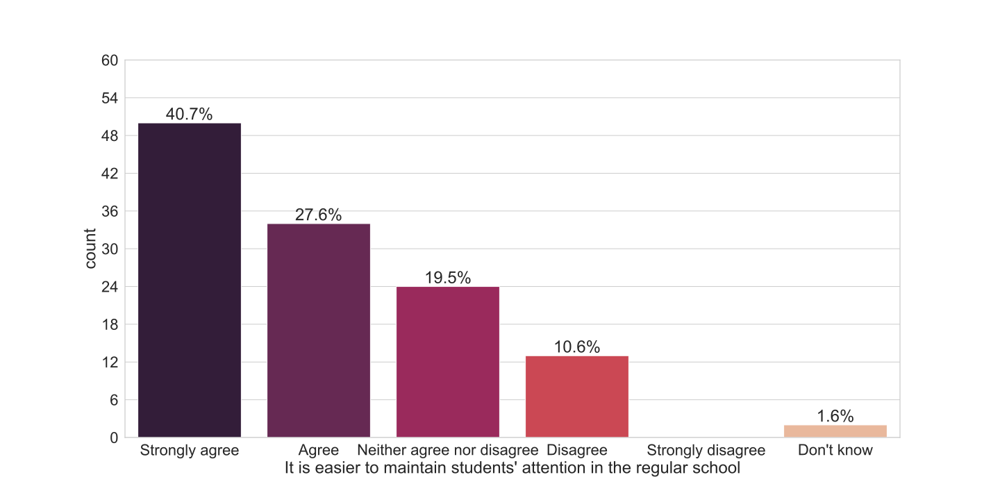
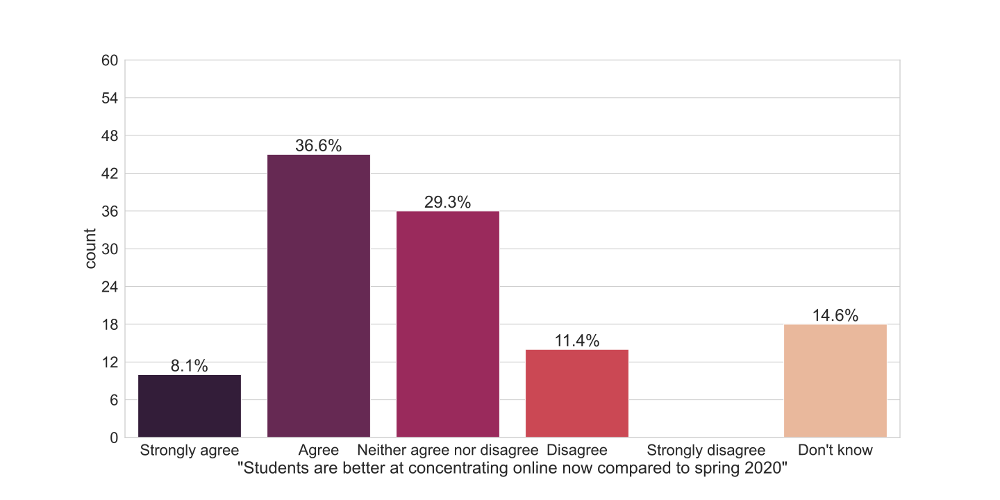
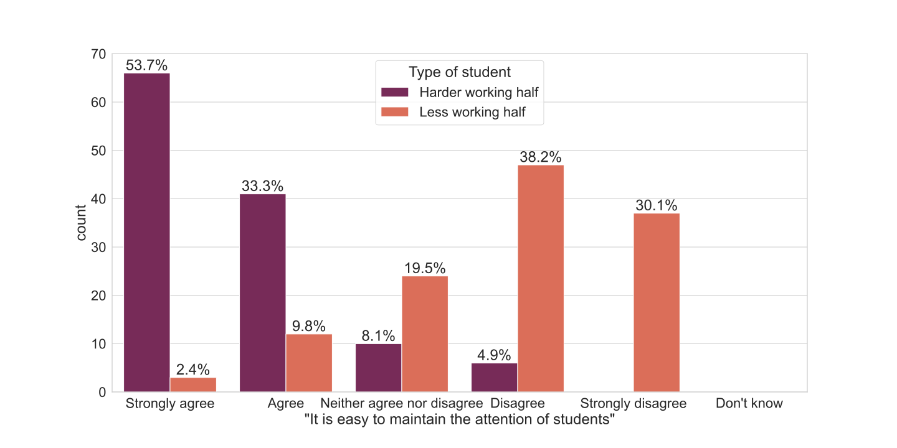
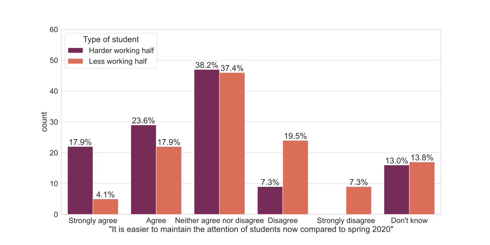

Student attention in the online school
By Helene Willadsen & Malene Hornstrup Jespersen
The efficacy of technology in the classroom and its effect on pupils’ attention has been debated for years1–4. Before the COVID-19 pandemic, teachers were largely in control of the usage of technology according to the teachers’ beliefs about its usefulness5. However, due to COVID-19 school closures teachers have lost control. Across the globe, teachers are suddenly forced to teach online. In this blogpost we investigate student attention in the online school. When a pupil pays attention the likelihood that she remembers the material increases 6,7, because being attentive to a task means that mental resources are allocated toward that particular task, and not other tasks 8. There is debate as to whether devises like laptops and smartphones increases attention and learning 9 or primarily distracts from learning 3,5. Further, even if debated, some studies show that attention develops depending on whether it is trained or not trained 10. In this line, we hypothesize that if students develop habits of not being attentive during online teaching, these habits can persist when schools reopen for physical teaching. In this sense, not only the level of knowledge is lower due to the lockdown but also the ability to learn is lower. We wish to investigate how teachers perceive how student attentiveness during the extreme and unprecedented experiment of online learning caused by the COVID-19 pandemic. We therefore sent out a survey to teachers, asking for their judgment of students’ attention in the online school. As this is the second (or thirdi) period of online schooling, we are interested in the development of student attention from the first lockdown to the second. Student attentiveness may have increased, since teachers and students alike are now familiar with the software and how to use it to their advantage. As initial problems are solved, teachers can focus on teaching, and maintaining students’ attention. However, student attentiveness may also have decreased if students and teachers experience an online fatigue. Teachers have perhaps already used the available online resources, and online platforms start to feel repetitive. Further, existing surveys report that online teaching is less varied compared to normal teaching in the schoolii. In the following blogpost we present the results of our survey, giving an insight into teachers’ experience of maintaining student attention in the online school. In brief we show that teachers experience it harder to maintain student attention in the online school compared to the physical school. We also show that on average students’ attentiveness improves from the first to the second lockdown, but only the attentiveness of hard working students improve.
1. SURVEY DESIGN
To understand student attention in the online classroom, we conducted a survey with teachers of students in compulsory education (grades 0-9 and the voluntary grade 10). The survey had 14 questions and answering took, on average, less than 5 minutes (for a Danish version of the survey see here). The survey was distributed on Facebook in a group called “For us who teach math”, which is a group for math teachers. It is a lively group with many posts on math education related issues. Posts include new educational material for math teachers, asking for help with structuring lessons or humoristic posts about teaching and math, and so on. The survey was posted on Tuesday February 2nd. On this day, a new governmental decree had been released stating that on Monday the 8th of February schools would re-open for the youngest students (grade 0-4). For older students the virtual school was extended to last at least throughout February.
| Figure 1: Participation invitation The text reads: Dear Math teachers, I am a postdoc at the University of Copenhagen, where I do research on attention in a digitized world. I am interested in knowing how you, as teachers, experience concentration in the online school. I have made this short survey (duration < 5min) to hear your experiences. I hope you will participate. Link is below: |
|---|
2. RESULTS
We closed the survey after 5 days, on February 7. 138 teachers had opened the survey, and 123 had completed the full survey and confirmed that they only filled out the survey once. Of these teachers, 97 teach children in grades 5-10, and 26 teach children in grades 0-4. Of the respondents, 43 teach at schools in the region of Copenhagen, 31 in region “Midtjylland”, 20 in region “Sjælland” and 11 in region “Nordjylland”. First, we were interested in knowing the extent to which teachers experience students’ attention in the online school, by asking teachers to indicate how much they agree with the broad statement “It is easy to maintain the attention of students”. The average answer to this question is 2.98iii, which is almost exactly equal to neither agree nor disagree. This may reflect a general disagreement among teachers as to how hard it is to maintain students’ attention. When asked whether is easier to maintain students’ attention in the regular (offline) school, teachers overwhelmingly agree:
| Figure 2: Maintaining student attention |
|---|
Quite clearly, teachers do struggle more with keeping their students attentive in the online school compared to the regular school.
2.1. COMPARISON TO SPRING 2020
A central question is whether attention improve from lockdown to lockdown, and hence we ask: Is it easier to maintain students’ attention now compared to the previous lockdown in spring 2020? If students’ attention is lower now than in the spring it suggests an online fatigue. If attention is worsening it could imply that learning is harmed more and more during each additional lockdown. However, if students’ attention is improving, it is a sign that students and teachers settle into the new educational environment, and can make better use of the online format. This could imply that learning in the online school improves.
| Figure 3: Attention compared to spring 2020 |
|---|
As displayed in Figure 3, 44.7% of teachers agree or strongly agree with the statement students are better at concentrating online in the second lockdown compared to the first lockdowniv, whereas only 11.4% disagree. This implies that students are improving on average, but not overwhelmingly so. We also note that more than a third, 43.9% either do not know or answer neither agree nor disagree. The meanv of this variable is 3.5, and it is significantlyvi higher than 3 (implying that the answer is on average “Neither agree nor disagree”). In sum, there is a modest overall agreement with the statement, indicating that attention is mildly improving when comparing the two lockdowns. Summarizing, we find that it is easier for teachers to maintain students’ attention in the offline school compared to the online school. However, teachers’ answers also suggest that online attention is improving when comparing the first and second lockdown. Next, we investigate the differences between attention of hardworking and less hardworking students.
2.2. DIFFERENCES IN LEARNING WHEN COMPARING THE MOST HARDWORKING AND THE LEAST HARDWORKING
We hypothesize that online schooling can exacerbate existing differences in class, if those who are not hardworking also do not pay attention. We ask teachers to evaluate the attentiveness of the harder working half of a class versus the lesser working half of a class, which is a dimension of student differences as it represents student effort rather than academic level. We are interested in the process of learning and effort and attentiveness are closely related (staying attentive requires effort). Figure 4 clearly shows that teachers struggle disproportionately with keeping the less hardworking half of a class attentive. For the harder working half of a class, 41.5% of teachers answer that they strongly agree or agree that it is easy to maintain the attention of students, but for the lesser working half this answer is given only by 22% of teachers. Vice versa, for the lesser working half of a class 26.8% of teachers disagree or strongly disagree with this statement, compared to only 7.3 percent for the harder working half. The means are 4.4 and 2.2 respectively and the difference is statistically significantvii.
| Figure 4: Student attention, divided by type of student |
|---|
We have previously shown how student attention is on average improving from the first to the second lockdown, however it is not improving similarly for all students. We asked teachers to assess if it is more difficult to maintain the attention of students comparing the current and the previous lockdown for the most and least hardworking students, respectively. The answers are displayed in Figure 5 and show that for the least hard working half, a quarter (26.8%) disagree or strongly disagree, compared to only 7.3% for the harder working half. The means are 3.6 for the harder working half and 2.9 for the lesser working half, and shows harder working half of students are improving significantlyviii more than the lesser working half of students.
| Figure 5: Attention compared to spring 2020, by type of student |
|---|
2.3. DO TEACHER CHARACTERISTICS IMPACT EVALUATION
Last, we investigate if teacher characteristics impact their evaluation of students’ attentiveness in online classes. Our teacher characteristics include whether they primarily teach younger or older students, where their school is located, if they have experience with online teaching, and their level of positivism toward the future (measured as the date where they expect schools to be open for visitors such as researchers). We examine both the answers to the statement “It is easier to maintain students’ attention in the regular school” and the statement ”It is easier to maintain the attention of students now compared to spring 2020”. We find no significantix relationship between answers to these variables and the mentioned teacher characteristics. We note that our sample is small, and our failure to find a relationship could be due to a lack of statistical power.
3. DISCUSSION
In this survey teachers report that students’ attention is harder to maintain in the online school. There is evidence that attention on a task increases memorizing the task6. In classrooms studies also show that more time with attention on task is associated with more learning12, and attention may in fact be the most important factor influencing learning13. We note that students could of course be attentive on a task but not attentive during instructions. To investigate this aspect, future research would benefit from e.g. ethnographic accounts about students attentiveness. Yet, we hypothesize that the attentiveness teachers experience is likely associated with the overall attentiveness and learning of students. As attentiveness is lower in the online school compared to the physical school, there is reason to suspect that the lockdowns do in fact hurt students’ learning. Teachers report that it has become easier to maintain attention from the first to the second lockdown. This seem to suggest that either teachers, students or both are learning to use the new setting of online schooling. For learning this could be positive news for learning during the second and long (+ 3 months) lockdown. There are large differences in the attentiveness in online teachings of different kinds of students. Teachers find it easy to maintain the attention of the most hardworking students, but difficult to maintain attention of the least hardworking students. The difference between the two types of students is large and significant. When looking at the improvement from lockdown to lockdown we also see that the harder working half of a class are becoming easier to keep attentive, whereas the lesser working students are not. This widening gaps is already being discussed in media and NGO’s where the reasons, among others, mentioned are physical surroundings and parental support14,15. From this survey we show a widening gap in attentiveness between the most hardworking and the least hardworking students that is exacerbated through continued lockdown. As some evidence suggests that attentiveness improves when trained (and depreciates when untrained) 10, the low attentiveness in the online school could decrease attention also in the physical school. Therefore, actively working with attentiveness of the least hardworking students should be a priority both in the current lockdown and in the coming lockdowns. As schools reopen, teachers should expect that the less hardworking students have fallen behind and extra resources should be directed towards these students.
- in municipalities Hjørring, Frederikshavn, Brønderslev, Jammerbugt, Vesthimmerland, Thisted og Læsø in Northern Jutland were also closed for students in grades 5-8 from Nov 9 until Nov 23.
- https://www.dlf.org/media/13421931/noedundervisning-i-forbindelse-med-covid19-nedlukningen.pdf
- We assigned 5 to “strongly agree”, 4 to “agree”, 3 to “neither agree nor disagree”, 2 to ”disagree” and 1 to “strongly disagree”. We do not use answers of “Don’t know”
- In this question we use the Danish word for concentrate. In this text we use concentration as a dimension of attention, as concentration refers to a person’s deliberate decision to invest mental effort on a single thing, for example the teaching 11.
- We assigned 5 to “strongly agree”, 4 to “agree”, 3 to “neither agree nor disagree”, 2 ”disagree” and 1 to “strongly disagree”. We do not use answers of “Don’t know”
- p<0.001 using the Wilcoxon signed rank test, which is a non-parametric test that is used to determine if a distribution is statistically significant from another distribution or a value.
- p<0.001 using the Wilcoxon signed rank test.
- p<0.001 using the Wilcoxon signed rank test.
- We use an ordered logistic regression, to accommodate the ordinal nature of our dependent variable (from strongly agree to strongly disagree).
References 1. Martin, L. R. Teaching Business Statistics in a Computer Lab: Benefit or Distraction? Journal of Education for Business 86, 326–331 (2011) 2. Mueller, P. A. & Oppenheimer, D. M. The Pen Is Mightier Than the Keyboard: Advantages of Longhand Over Laptop Note Taking. Psychol Sci 25, 1159–1168 (2014). 3. Risko, E. F., Buchanan, D., Medimorec, S. & Kingstone, A. Everyday attention: Mind wandering and computer use during lectures. Computers & Education 68, 275–283 (2013). 4. Yamamoto, K. Banning Laptops in the Classroom: Is it Worth the Hassles? https://papers.ssrn.com/abstract=1078740 (2007). 5. Ertmer, P. A. Teacher pedagogical beliefs: The final frontier in our quest for technology integration? ETR&D 53, 25–39 (2005). 6. Dudukovic, N. M., DuBrow, S. & Wagner, A. D. Attention during memory retrieval enhances future remembering. Memory & Cognition 37, 953–961 (2009). 7. Mendoza, J. S., Pody, B. C., Lee, S., Kim, M. & McDonough, I. M. The effect of cellphones on attention and learning: The influences of time, distraction, and nomophobia. Computers in Human Behavior 86, 52–60 (2018). 8. Chun, M. M. & Turk-Browne, N. B. Interactions between attention and memory. Current Opinion in Neurobiology 17, 177–184 (2007). 9. Lynch, J. & Redpath, T. ‘Smart’ technologies in early years literacy education: A meta-narrative of paradigmatic tensions in iPad use in an Australian preparatory classroom. Journal of Early Childhood Literacy 14, 147–174 (2014). 10. Anguera, J. A. et al. Video game training enhances cognitive control in older adults. Nature 501, 97–101 (2013). 11. Moran, A. Concentration: Attention and Performance. The Oxford Handbook of Sport and Performance Psychology https://www.oxfordhandbooks.com/view/10.1093/oxfordhb/9780199731763.001.0001/oxfordhb-9780199731763-e-6 (2012) doi:10.1093/oxfordhb/9780199731763.013.0006. 12. Samuels, S. J. & Turnure, J. E. Attention and reading achievement in first-grade boys and girls. Journal of Educational Psychology 66, 29 (19740101). 13. Posner, M. I. & Rothbart, M. K. Attention to learning of school subjects. Trends in Neuroscience and Education 3, 14–17 (2014). 14. The impact of COVID-19 on student equity and inclusion: Supporting vulnerable students during school closures and school re-openings. OECD http://www.oecd.org/coronavirus/policy-responses/the-impact-of-covid-19-on-student-equity-and-inclusion-supporting-vulnerable-students-during-school-closures-and-school-re-openings-d593b5c8/. 15. Goldstein, D. The Class Divide: Remote Learning at 2 Schools, Private and Public. The New York Times (2020).